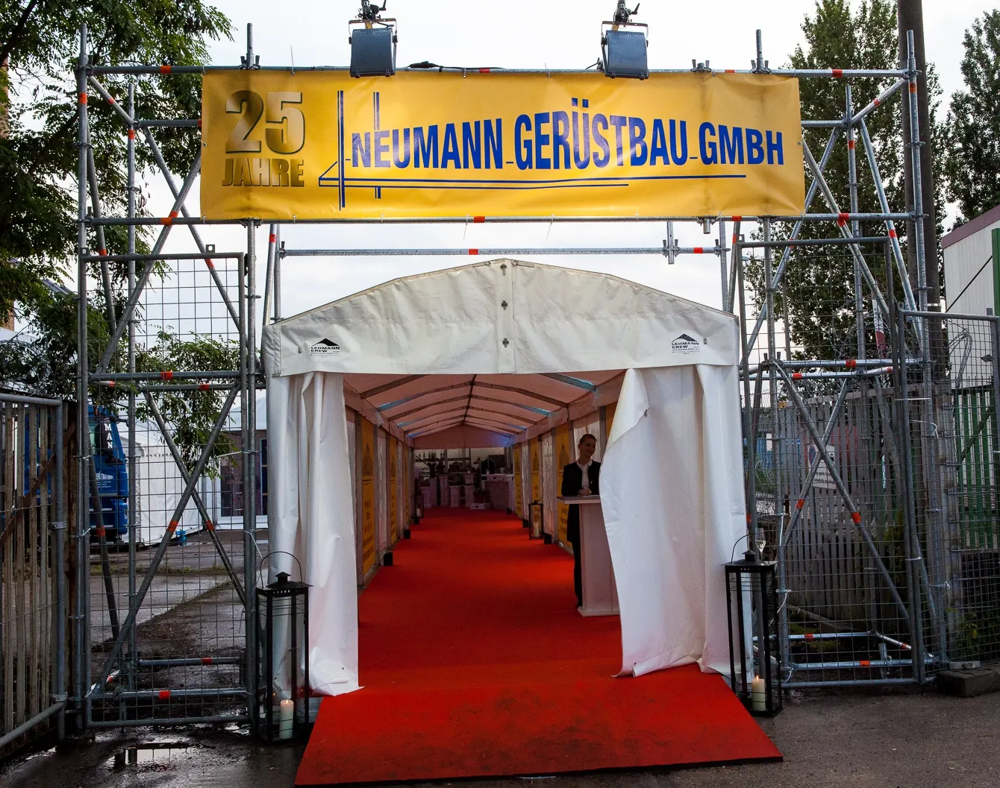

Jedes Gerüst wird nach Regelausführung oder statischem Nachweis gebaut, verankert und vor der Freigabe geprüft. Wir arbeiten nach dem Arbeitsschutzmanagement AMS BAU der BG BAU.
Mehr erfahrenDas Gerüst, das Termine hält und Fassaden sicher macht.
Wir planen, liefern und montieren Rahmen- und Rohrkupplungsgerüste mit eigenem Material, eigenem Fuhrpark und festen Kolonnen. Von der ersten Fußplatte bis zum letzten Bauteil auf dem LKW bleibt ein Ansprechpartner für Sie zuständig.
Werte
Verlässlichkeit, die man von der Straße aus sieht.
Eigene Kolonnen, eigener Fuhrpark, eigenes Lager in Marzahn. Wir sind nicht von Subunternehmern abhängig und stehen dann auf der Baustelle, wenn es vereinbart ist.
Termin anfragenSeit 1990 in Berlin. Vom Gründerzeithaus im Kiez bis zum Olympiastadion, vom Kirchturm bis zur Konzertbühne.
Projekte ansehenAusbildungsbetrieb seit 1990 und Mitglied im Bundesverband Gerüstbau. Wer bei uns lernt, steht früh auf echten Baustellen.
Zur KarriereLeistungen
Alles, was hoch hinaus muss.
- 01
Rahmen- und Rohrkupplungsgerüste
Arbeits- und Schutzgerüste für Fassade, Dach und Innenraum.
- 02
Wetterschutzdächer
Ein Dach über der Baustelle, damit der Zeitplan nicht am Wetter hängt.
- 03
Bühnen und Verkleidungen
Tribünen, Podeste, Planen, Netze und Werbeflächen am Gerüst.
- 04
Bauaufzüge und Hebebühnen
Material und Menschen kommen sicher nach oben.
- 05
Sonderkonstruktionen
Hängegerüste, Überbrückungen, Treppentürme nach Maß.
- 06
Containertransporte
Eigene LKW mit Ladekran und Abrollsystem.
Projekte
Berlin kennt unsere Gerüste.

Fig. 01 · Firmenjubiläum 2016Unternehmen
Seit 1990 in Berlin. Von Marzahn aus in die ganze Stadt.
Die Neumann Gerüstbau GmbH ist Ihr Partner für Gerüste in Berlin und Brandenburg. Büro, Lager und Werkstatt liegen in der Bitterfelder Straße in Marzahn. Feste Ansprechpartner begleiten Sie von der Planung bis zum Abbau.
- Geschäftsführung
- Jörg, Torsten und Mike Neumann
- Mitgliedschaft
- Bundesverband Gerüstbau
- Arbeitsschutz
- AMS BAU der BG BAU
- Ausbildung
- Ausbildungsbetrieb seit 1990

Karriere
Arbeit mit Aussicht.
Laufend
Gerüstbauer (m/w/d)
Für unsere Kolonnen in Berlin und Brandenburg. Mit Erfahrung oder als Quereinsteiger.
Ab sofortSchlosser / Metallbauer (m/w/d)
Werkstatt, Reparatur von Gerüstmaterial, Schweißkenntnisse.
LaufendKraftfahrer (m/w/d)
Kran- und Container-LKW, Material dorthin, wo es gebraucht wird.
AusbildungAusbildung zum Gerüstbauer
Seit 1990 bilden wir aus. Echte Baustellen ab dem ersten Monat.
Erzählen Sie uns von Ihrem Projekt. Wir beraten Sie kostenfrei zu Gerüstart, Umfang, Standzeit und Ablauf und sagen Ihnen, wann wir stehen können.
- Telefon
- 030 925 14 43
- Adresse
- Bitterfelder Straße 23, 12681 Berlin
- Bürozeiten
- Mo bis Fr, 7 bis 16 Uhr